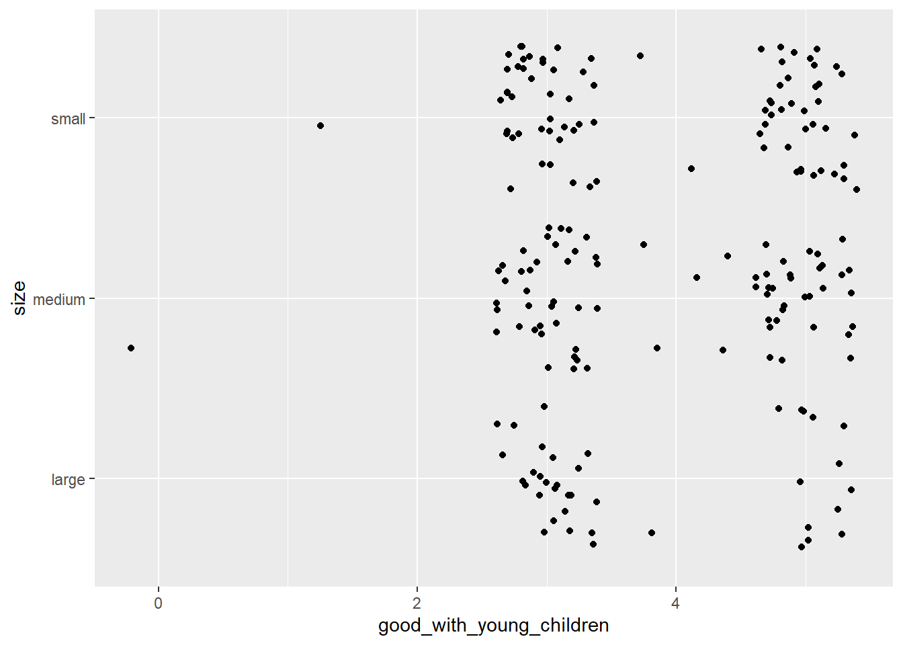

The data set examined different traits of over a 195 dog breeds. I wanted to find out if there was a correlation between a dog’s breeds and their affection towards children. Originally I asked if terrier breeds had a higher affection with young children compared to other breeds such as chihuahuas and beagles. However due to the high number of terrier breeds, the data become crowded and hard to read in a plot. The correlation between the size of a dog and its relationship with a children was examined.
Introduction
The American Kennel Club lists over 300 identified dog breeds. Over the years, these breeds have been analyzed for the purpose of competitions, role in fields such as sporting, forensics, therapy, and their fitness compared to specific human lifestyles. The dataset used for this experiment focused on variables relating to this last factor. For example some of the main variables included “Affectionate with family or energy level.” The set included over 195 breeds, each ranked from 1 to 5 for the variables. The personality of dog breeds tends to generalized in relation to its size. Anecdotes of chihuahas being rowdy or beagles being warm and aloof grow to dominate perceptions of the small and medium sized breeds. For that reason, this dataset examines if there is a relationship between a dogs size and their quality of young children. Each dog breed was assigned to one of three variables - small, medium, large depending on how they were categorized by the American Kennel Club. From there a plot was created to observe the average rank of each size with young children.
Loading Library and Tidyverse
For the sake of using pipes and other functions in this script, I loaded tidyverse. I then split my data into exploratory data and test_data. The purpose of the splitting data is so that we can create inferences about our total population (the exploratory data set) from the test data. However as I realized I wanted to combine all the dog breeds into three sets, it become unnecessary to develop inferences for this project
To begin my analysis, I had to grab the dataset from a CSV file on GitHub and store it in the variable breed_traits, trait_description, breed_rank_all. For this project, we will be focusing on the dataset breed_traits.
Rows: 195 Columns: 17
── Column specification ────────────────────────────────────────────────────────
Delimiter: ","
chr (3): Breed, Coat Type, Coat Length
dbl (14): Affectionate With Family, Good With Young Children, Good With Othe...
ℹ Use `spec()` to retrieve the full column specification for this data.
ℹ Specify the column types or set `show_col_types = FALSE` to quiet this message.
Rows: 16 Columns: 4
── Column specification ────────────────────────────────────────────────────────
Delimiter: ","
chr (4): Trait, Trait_1, Trait_5, Description
ℹ Use `spec()` to retrieve the full column specification for this data.
ℹ Specify the column types or set `show_col_types = FALSE` to quiet this message.
For the sake of using pipes and other functions in this script, I loaded tidyverse. I then split my data into exploratory data and test_data. The purpose of the splitting data is so that we can create inferences about our total population (the exploratory data set) from the test data. However as I realized I wanted to combine all the dog breeds into three sets, it become unnecessary to develop inferences for this project
The janitor package allows the names of the dog breeds to be read in an easier way for R studio.
The code block below reflected my first hypothesis. I wanted to see if broad categories of dogs (i.e Terriers, Chihuahas, Beagles) could be compared in how they treated young children. After piping the data from breed_traits, I created a new variable for terriers, corgis, chihuahas, and beagles using the string detect function. After all categories were created, I combined them into one variable called is_mine. The next line ran the entire dataset for any of the breeds defined under is_mine. If they did not find the breed, they would filter it out. As a result, it would only plot the breeds I wanted.
breed_traits %>%mutate(is_terrier=str_detect(breed, "Terrier"))%>%mutate(is_beagle=str_detect(breed, "Beagle"))%>%mutate(is_corgi=str_detect(breed, "Corgis"))%>%mutate(is_chihuaha=str_detect(breed, "Chihuaha"))%>%mutate(is_mine=is_terrier+is_beagle+is_corgi+is_chihuaha)%>%filter(is_mine>0)%>%ggplot()+geom_point(aes(x= good_with_young_children, y = breed))
The dataset failed because of the sheer number of terrier breeds compared to the other categories. Consequently, the data became unreadable with several observations represting the different terrier breeds overshadowing the other breeds.
A New Hypothesis
With the original hypothesis failing, I went back to the drawing board. I hypothesized that another way to organize breeds. Due to prevailing assumptions of a dog’s personality based on its size, I hypothesized that large dogs would be the best around children. My reasoning being that despite their size scaring some children, compared to smaller dogs they may seem more aloof and amiable. To test this theory, I created three new variables: large, small, and medium. Then came the tedious task of organizing all 195 breeds into these categories. Since the breeds themselves arent categorized by the dataset, I needed to define if a breed was small, large or medium according to standard weights set by the American Kennel Club. Afterwards, I used the mutate function so that the data could run through all three sizes: large, small, medium. The point of this function is so that the data can organize each of the breeds into one function called size. This x value will then be compared to our y value (good with children) in a jitter plot. I ran into some problems constructing this dataset including using pipes when organizing the dataset (which was not necessary) and using the wrong plot (point plot vs jitter or box plot).
large<-c("German Shepherd Dogs","Rottweilers","Great Danes","Doberman Pinschers","Bermese Mountain Dogs","Cane Corso","Collie","Mastiffs","Belgian Malinois","Weimaraners","Newfoundlands","Rhodesian Ridgebacks","Retrievers (Chesapeake Bay)","Bloodhounds","Akitas","Airedale Terriers","Alaskan Malamute","Giant Schnauzers","Old English Sheepdogs","St. Bernards","Great Pyrenees","Bullmastiff","Dogues de Bordeaux","Irish Wolfhounds", "Setters (Irish)","Greater Swiss Mountain Dogs","Anatolian Shepherd Dog","Dogo Argentinos","Bouviers des Flandres","Leonbergers","Neapolitan Mastiffs","Borsoi","Godron Settler","Tibetan Mastiffs","Beaucerons","Afghan Hounds","Boerboels","Black Russian Terriers","Black and Tan Coonhounds","Greyhounds","Retrievers (Curly-Coated)","Scottish Deerhounds","Otterhounds","Kuvaszok","Komondorok","Sloughis") medium<-c("Retrievers (Labrador)","Retrievers (Golden)","Bulldogs","Beagles","Pointers (German Shorthaired)","Australian Shepherds","Boxers","Siberian Huskies","Spaniels (English Springer)","Brittanys","Border Collies","Vizslas","Basset Hounds","Shiba Inu","Spaniels (English Cocker)","Portuguese Water Dogs","Pointers (German Wirehaired)","Chinese Shar-Pei","Wirehaired Pointing Griffons","Bull Terriers","Soft Coated Wheaten Terriers","Whippets","Dalmatians","Australian Cattle Dogs","Samoyed","Retrievers (Nova Scotia Duck Tolling)","Staffordshire Bull Terriers","American Staffordshire Terriers","Chow Chow","Boykin Spaniel","Lagotti Romagnoli","Norwegian Elkhounds","Standard Schnauzers","Keeshonden","Tibetan Terriers","Settler (English)","Retrievers (Flat-Coated)","Belgian Tervuren","Spinoni Italiani","Welsh Springer Spaniel","Xoloitzcuintli","Manchester Terriers","Kerry Blue Terriers","Spaniel(Clumber)","Bluetick Coonhounds","German Pinschers","American Eskimo Dogs","Irish Terriers","Bearded Collie","Pointer","Belgian Sheepdogs", "Bedlington Terriers","Pulik","Salukis","Barbets","Redbone Coonhounds","Spanish Water Dogs","Briards","Berger Picards","Entlebucher Mountain Dogs","Treeing Walker Coonhounds","Icelandic Sheepdogs","Wirehaired Vizslas","Pumik", "Portuguese Podengo Pequenos","American Water Spaniel","Field Spaniel","Nederlandse Kooikerhondjes","Finnish Lapphunds","Plott Hounds","Norwegian Buhunds","Irish Red and White Setter","Norwegian Lundehunds", "Ibizan Hounds", "Spaniels(Sussex)","Bergamasco Sheepdogs","Spaniels (Irish Water)","Polish Lowland Sheepdogs","Cirnechi dell'Etna","Pharaoh Hounds", "Canaan Dogs","American English Coonhounds","Chinooks","Finnish Spitz","Harriers","American Foxhounds","Azawakhs","English Foxhounds") small<-c("French Bulldogs","Poodles","Dachshunds","Pembroke Welsh Corgis","Yorkshire Terriers","Cavalier King Charles Spaniels","Miniature Schnauzers","Shih Tzu","Boston Terriers","Pomeranians","Havanese","Cane Corso","Shetland Sheepdogs","Pugs","Spaniels (Cocker)","Miniature American Shepherd","Chihuahuas","Maltese","West Highland White Terriers","Bichons Frises","Cardigan Welsh Corgis","Italian Greyhounds","Scottish Terriers","Papillons","Brussels Griffons","Russell Terrier", "Cairn Terriers","Miniature Pinschers","Lhasa Apsos","Chinese Crested","Coton de Tulear","Rat Terrier","Basenjis","Pekingese","Boder Terrier","Fox Terriers (Wire)","Miniature Bull Terriers","Silky Terriers","Norwich Terriers","Japanese Chin","Welsh Terriers","Toy Fox Terriers","Schipperkes","Russell Terriers","American Hairless Terrier","Norfolk Terriers","Australian Terriers","Lakeland Terriers","English Toy Spaniels","Tibetan Spaniels","Smooth Fox Terrier","Swedish Vallhunds","Sealyham Terriers","Lowchen","Affenpinschers","Petits Bassets Griffons Vendeens", "Glen of Imaal Terriers","Dandie Dinmont Terriers","Pyrenean Shepherds", "Skye Terriers","Petit Basset Griffon Vendeen","Cesky Terriers")breed_traits%>%mutate(size =ifelse(breed%in%large,"large",ifelse(breed%in%medium,"medium","small")))%>%ggplot()+geom_jitter(aes(x= good_with_young_children, y = size))

My analysis ran into some issues collecting each of the breeds as variables and categorizing them into the right size category. The command that was meant to organize each of the breeds into sizes was written as.
In this line of code, R will create a variable known as size and assign them into string categories such as “small”, “medium”, “large” that will be displayed on the jitter plot as part of the y axis. The mutate command works using the function ifelse. Ifelse will search the list of strings to see if they were listed under the variable of large and if not medium. If a breed in the dataset is not detected under either variable, it will default to being classified as small when organized in size. Due to this assumption I wouldnt have to print out a breed name if it was small (however I did so to ensure I collected every breed). It also meant that any string that did not match with a breed in the dataset would default to the small category. Problems arose from this function due to typos (including lack of pluralization or misnaming) I had printed out for the strings. As a result the initial jitter plot was skewed towards small and counted up to 142 out of the 195 breeds as small. However once I fixed this typo, I was able to create a coherent dataset.
The jitter plot displayed coherent but somewhat underwhelming results. The data visualized how most dog breeds regardless of size scored either 3 or 5 when dealing with young children. Interestingly there is only one small or medium breed that lists below a score of 3 (there were no large breeds listed below but they also had a smaller sample size) and very few listed with a score of 4. The analysis showed that size was not a correlating factor in how well a dog performed with young children and most tended to score either average or excellent with very few observations below or between those scores.
Due to the discrete categorical values used to score how well the dogs did with children, the data does much to be desired. There is a question of how the data was conducted and who scored the dogs. The data on this scale (examining 195 breeds) is also limited by the number of observations. Only 1 dog for each breed is listed essentially making the data anecdotal.